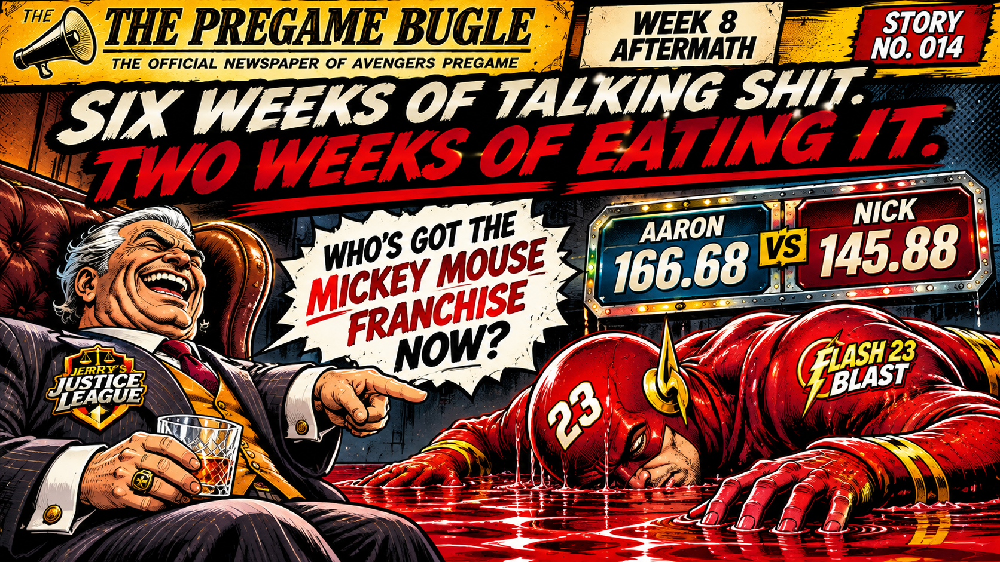

For six weeks, Nick was undefeated, untouchable, and apparently under the impression that the rest of Avengers Pregame existed solely to admire his franchise.
He wasn't just winning. He was handing out unsolicited business advice, telling other owners to sell their teams like he was the Warren Buffett of fantasy football.
Then the Jugs showed up.
I handed Nick his first loss of the season, ending his perfect 6–0 start. Apparently, Aaron saw what happened and decided there was no reason to stop kicking a man while he was down.
SIX WEEKS OF TALKING SHIT. TWO WEEKS OF EATING IT.
But let's give Aaron his flowers. Jerry's Justice League dropped 166.68 points, the highest score in Avengers Pregame this week, continuing a stretch of impressive offensive performances.
And let's not forget, Aaron still holds the league's all-time single-week scoring record. The man has already demonstrated what his roster is capable of when everything clicks, and apparently he's interested in reminding everyone.
For all the shit Aaron catches, he's putting up numbers that deserve respect. His latest victim just happened to be the league's former undefeated loudmouth.
Nick actually scored 145.88, which would have beaten five of the other six teams this week.
Unfortunately, fantasy football doesn't award victories for hypothetical matchups. Especially not to a guy who spent six weeks explaining why everyone else's franchise was worthless.
Who's got the Mickey Mouse franchise now, Nick? Six weeks of telling everyone else to sell their teams, and now you've lost two straight.
SELL YOUR FUCKING FRANCHISE.
Now Nick sits at 6–2, tied with the Jugs, while Aaron is making a compelling case that Jerry's Justice League is far more dangerous than its record suggests.
THURSDAY KICKOFF WATCH: Nick remains 6–2, but a third straight loss would turn his slump into a liquidation sale. He just spent $50 FAAB on Denver's defense, so expectations are now as inflated as the receipt. Aaron sits at 3–5 and needs another big scoring performance to translate into a win. Both enter Thursday with something to prove.